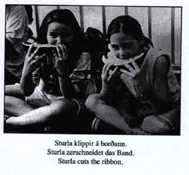

|
|
|
Hér - Hier - Here
Kunstverein Heilbronn, March 31 - May 13, 2001
Hlynur Hallsson was born in 1968 in Akureyri/Island. In his work he investigates different connections between places, different countries and landscapes. The question of structures of communication is a main subject in his works.
This theme determines also his installation for the Kunstverein Heilbronn. In this Installation Hlynur Hallsson combines pictures from the Heilbronner Stimme (the daily newspaper in Heilbronn) with subtitles from the Akureyri's daily newspaper. All subtitles are also translated in German and English.
Most of the pictures are shown in the original size, and some of them enlarged into poster-size. Beyond it Hlynur Hallsson shows a video film. In this film features form CNN and other newcasts are combined with texts which are not belonging to the source. To the exhibition we have published a newspaper which Hlynur Hallsson has conceived and designed.
In this exhibition the visitors are confronted with two systems which are not especcially together but with the power of association they build connections. This is a main point in human perception - the ability to build new connections to find a way to deal with the strange and foreign.
With this communicative instruments Hlynur Hallsson sharps the perception of the viewer.
Hlynur Hallsson
|
Der 1968 in Akureyri/Island geborene Hlynur Hallsson untersucht Zusammenhänge verschiedener Orte, verschiedener Kulturen und Landschaften. Die Frage nach den Strukturen der Kommunikation spielt dabei in allen seinen Arbeiten eine herausragende Rolle. Hlynur Hallssons realisisert seine Arbeiten in verschiedenen Medien, von Fotografie, Zeichnung bis hin zu Videos und Aktionen.
Diese Thematik bestimmt auch seine Installation Hér - Hier - Here für den Kunstverein Heilbronn vom (31. März bis 13. Mai 2001). Hier kombiniert Hlynur Hallsson etwa 250 s/w-Fotos aus dem Archiv der "Heilbronner Stimme", der ortsansässigen Tageszeitung, mit Bildunterschriften aus "Dagur" (Der Tag), der Zeitung seiner Heimatstadt Akureyri. Die Untertitel werden jeweils auch ins Englische und Deutsche übersetzt, ein Prinzip, das in vielen seiner Arbeiten Anwendung findet. Diese Praxis weist auf die Form von Mobilität hin, die zu einem wichtigen Anspruch und beinahe auch schon zu einer Gewohnheit in unserer Gesellschaft geworden ist. Die Fotos werden zum Teil in Originalgröße, zum Teil auf Posterformat vergrößert, im Kunstverein Heilbronn gezeigt. Darüber hinaus zeigt Hlynur Hallsson einen Videofilm. In diesem sind Ausschnitte aus verschiedenen Nachrichtensendungen, von CNN bis Eurosport, mit verschiedenen Nachrichtentexten unterlegt. Parallel dazu ist es dem Besucher möglich, sowohl in dem stets aktuellen Exemplar der Heilbronner Stimme oder der isländischen Tageszeitung zu lesen, die während der Ausstellungszeit ausgelegt sind. Darüber hinaus ist eine von Hlynur Hallsson konzipierte und gestaltete Zeitung erschienen.
Die Qualität dieser Arbeit liegt in ihrem starken Ortsbezug. Hlynur Hallsson nähert sich dem Thema mit der für ihn typischen diskreten, fragenden wie präzisen Weise und macht damit auf spezifische Faktoren der Stadt Heilbronn aufmerksam. Zugleich transportiert er durch die Verschiebung der Textebene Informationen aus Island, die beim Besucher "Hier" eine Vorstellung der Situation in Island hervorruft.
Er schärft mit kommunikativen Werkzeugen die Wahrnehmung des Betrachters, dies gilt für die Installation in Heilbronn als exemplarisches Beispiel genauso wie für die in den letzten Jahren entstandenen Arbeiten.
Matthia Löbke
|
 |
 |